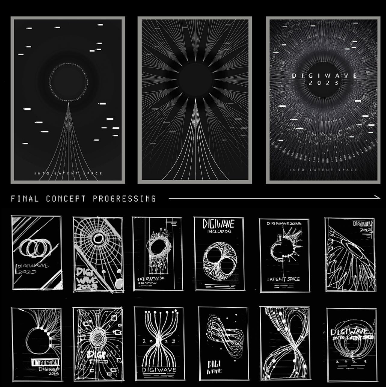
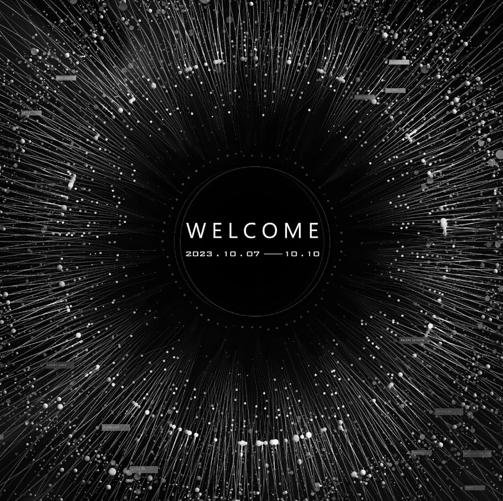
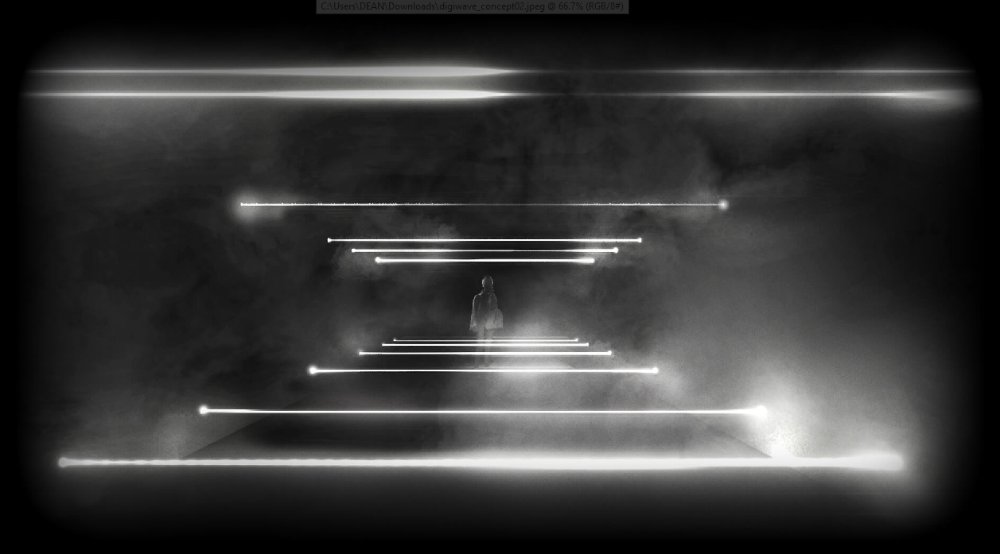
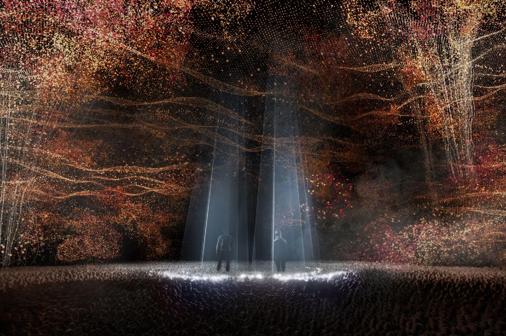
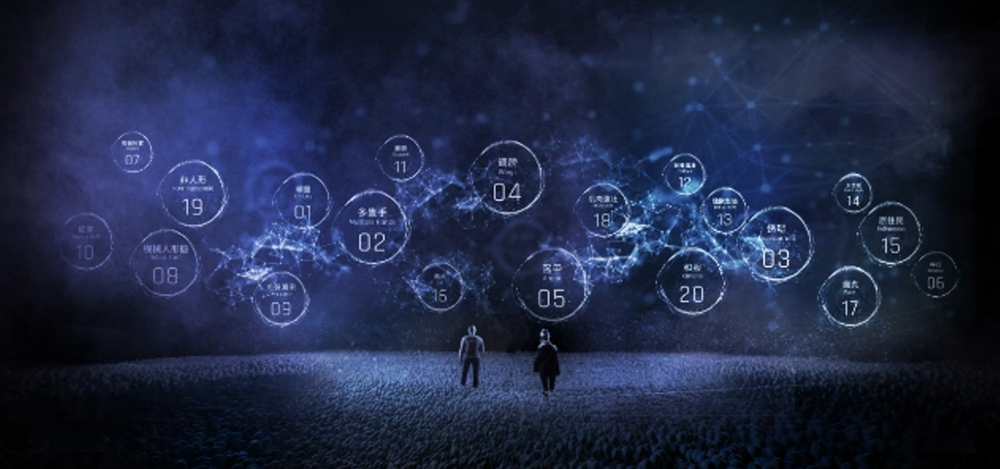
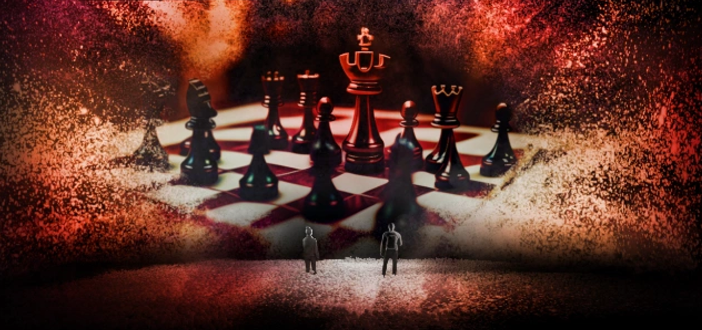

Digiwave: Latent Space (2023)
- interactive exhibition exploring generative AI and neural networks -
Overview
Digiwave: Latent Space is an interactive exhibition that explores the relationship between humans and generative AI. The project visualizes neural networks as dynamic, luminous structures, inviting visitors to interact with the "latent space" of AI-generated content. It is an in-door interactive experience that features 100,000 softball, projection, laser, and realtime AI animation generation. During runtime, it has attracted around 130,000 visitors and received MUSE Golden Winner for 2023.
My Role
As Art Director, I was responsible for the visual identity, general art style, and interactive concepts. I led the artistic direction of the generative visuals and supervised the implementation of AI-driven video generation within the exhibition space.
Highlights
- MUSE Golden Winner for 2023.
- Designed the aethetics, looks, animation and tones of the exhibition.
- Concepted the key arts and inclusion stage.
- Integrated Stable Diffusion and custom Unity-based pipelines for real-time interaction.
- Designed an immersive visual language representing neural network structures.
- Coordinated between technical and creative teams to deliver a large-scale interactive installation.
Art & Process

The visual concept focused on the "invisible" connections within AI model architectures (Neural Network). We used bioluminescent-inspired lighting and fluid, data-driven forms to bridge the gap between abstract code and human sensory experience.

The key visual has gone through multiple iteration in the pre-production. I was clear on the idea of using the unique visual structure of neural networks and its similarity to real human tissues. It gives me the idea of using its pattern to create a shape of eyes that is made up by hundreds of those networks. It also serves as a way of implying the A.I. is also looking back at its viewer. You can see the importance of the early drawings that gives a scense of what works and what don't. It is pretty much my process of starting a design all the time, start with a simple drawing with an idea and develop from there.

The polished final version of the cropped key visual by our talented in-house artist 'Joe'. After this amazing art that captures the digital neural networks that resembles a human eye. The next challenge is how we can make it moves and be as dynamics as possible in our Unity engine in realtime.




These are the some of the final design of each stages in the 'Inclusion' section of the exhibition. I wanted to gives the user a feeling of being inside of a grand abstract A.I. achitecture, that's in the process of generating user requests. So there are a lot of the visual cues that's being implemented here such as heavy use of points and lines. We wanted to emphasis on the idea of data being organic, so there are large amount of randomness and unpredictibility within the design.

A demonstration of its dynamic animation and effects that's combined with realtime laser while being projected on the wall.

Demonstration of transition and interaction with the user.

A section of the opening animation of the show. (credit: Mina)
Behind the scene videos
Gallery
{kind=link}
{kind=link}
{kind=link}
{kind=link}
Project Details
Role: Art Director
Type: Interactive Exhibition
Year: 2023
Studio: Moonshine Studio
Tools & Tech: Unity Engine, Stable Diffusion, Adobe Creative Suite